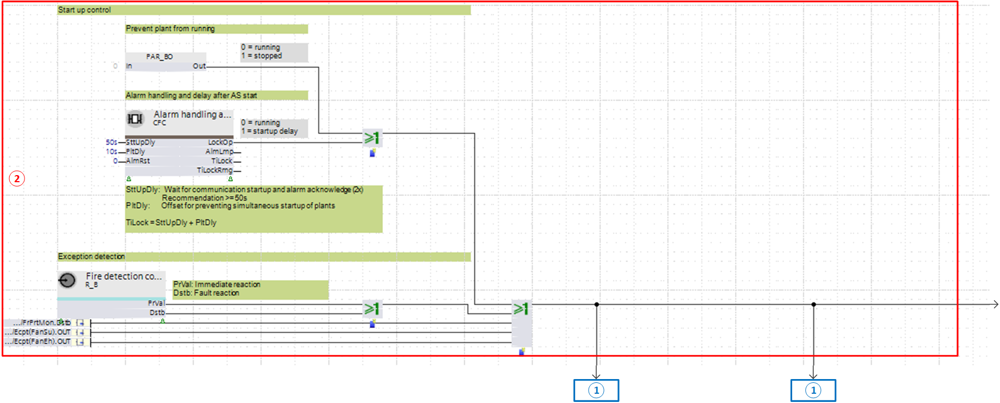

异常模式的典型输入块
现在的exception mode通过评估适用的输入块来确定。
通常使用以下函数作为输入块：
- Switch-on fuse
- Fire detector
- Message smoke extraction
- Frost protection monitor
- Overtemperature monitoring
- Fault messages, e.g. from fans
- Maintenance switch, e.g. for fans
Input blocks for exception mode in the Programming editor

① 正常模式（为启用的异常模式快速关闭正常模式）
② 异常模式
Present exception mode determination
示例中的输入块是：
- Switch-on fuse with PAR_BO
- Contact for fire detector with R_B
- Fixed switch-on delay, for example, for stage start-up
两个输入块的二进制输出通过逻辑运算符 OR 的功能块互连。对于火灾探测器触点，[PrVal]和[Dstb]也与OR互连，以便这两种情况都可以触发异常模式。
一旦两个输入块之一将值 1 发送到功能块 OR，它也会提供值 1。这将启用异常模式。
该信号在与功能块 CMDSEQ_B 的输入 [RpdOff] 互连的范围内影响正常模式的快速关闭。
功能块CMDSEQ_B在这种情况下，输入 [PrVal] 值 1 =“关闭”（通过输入 [RpdOff] 触发快速关闭）。
信号直接或通过其他功能块互连到输出块的输入。
相关优先级定义在output blocks（通常优先级为 15）。